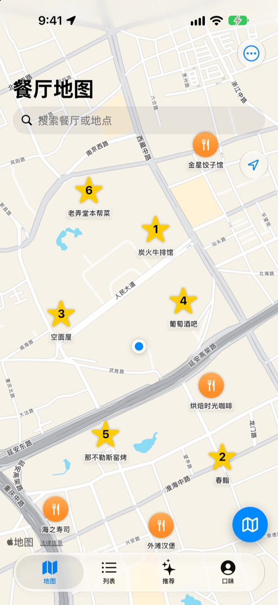
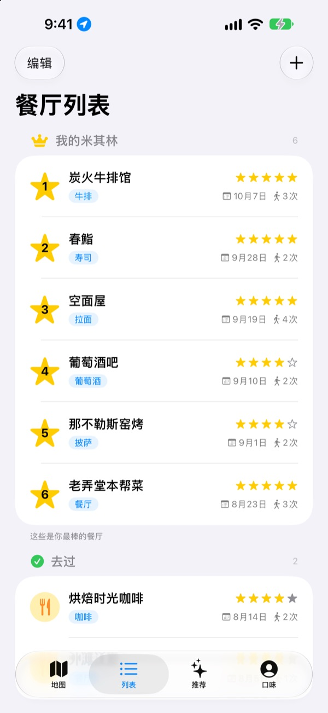
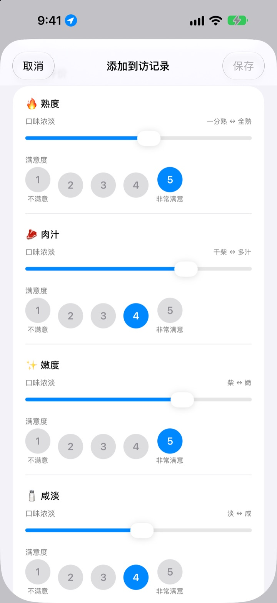
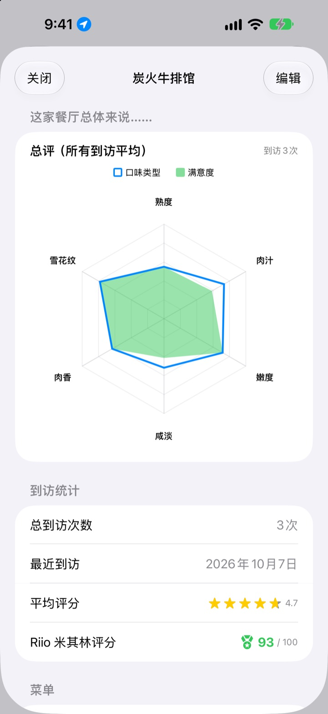

吃过的好店，
再也不会忘
把去过和想去的餐厅收进地图，每次去都记下点了什么、拍的照片和口味评价。下次不知道去哪吃，自己的记录会给你答案。
所有功能免费。无需注册，记录只留在你的 iPhone 上。

评一道菜试试
选一种菜，给每种味道的浓淡和满意度打分。项目和计算方式都和 App 里的到访记录一样。
那家店，到底什么好吃来着？
明明记得那家店很好吃，店名却想不起来，点了什么、汤是不是偏咸就更记不得了。最后只好重新搜索，看别人的点评。人生美食把你亲口尝过的记录留在地图上，让下一次选择靠自己的经验。
去过、想去，还有我的米其林
在地图上搜索，或轻点附近的地点就能马上保存。去过的和总有一天想去的分开管理，最爱的六家还能从第 1 名排到第 6 名。
有人问你推荐哪家，直接把这份清单给他看。

按菜品提问来评价
辣度、咸淡这类味道的浓淡用滑块设定，喜不喜欢则另外从 1 到 5 打分。牛排看熟度和肉汁，寿司看醋饭和鱼生，拉面看汤头和面条，每种菜的项目都不一样。
到访记录里还会一起留下菜品、照片、星级和备注。

值得再去的店，一看分数就知道
到访次数多了，餐厅页面会显示按所有到访平均绘制的总评图，以及结合星级和满意度、满分 100 的 Riio 米其林评分。
在保存的餐厅吃完离开后，过一会儿会收到提醒你记录的通知，不会忘记写。

三步开始
- 1
保存餐厅
在地图上搜索，或轻点附近的地点加入列表。
- 2
去过就记录
记下菜品、照片、星级和口味评价。口味评价可选。
- 3
挑下一家
看看 Top 6 和评分，再用苹果地图、Kakao 地图或 Naver 地图导航。
不同菜品的评价项目
- 🍽️ 常规
- 辣度、浓郁度、甜度、咸度、油腻度、本味
- 🥩 牛排
- 熟度、肉汁、嫩度、咸淡、肉香、雪花纹
- 🍣 寿司
- 醋饭、鱼生（食材）、芥末、平衡、捏制、温度
- 🍜 拉面
- 汤头、面条、叉烧、配料、温度、平衡
- 🍕 披萨
- 饼底、酱料、芝士、熟度、配料、平衡
- 🍷 葡萄酒
- 醇厚度、单宁、酸度、香气、余韵、平衡
- ☕ 咖啡
- 酸度、醇厚度、风味、余味、甜度、平衡
其他菜品用第一行的通用项目来评价。也可以自己创建菜品分类。
常见问题
怎样添加餐厅？
在地图上方的搜索栏输入餐厅名称，然后在结果中轻点“添加到我的餐厅列表”。 也可以轻点地图上显示的附近地点，直接添加。 搜索不到的地方，可以在当前位置或地图上选定的位置直接添加。
“去过”“想去”和 Top 6 分别是什么？
去过：已经去过的餐厅，可以留下到店记录。 想去：总有一天想去的餐厅。去过之后，请在餐厅详情页把它改为“去过”。 Top 6（我的米其林）：为你最珍爱的六家餐厅排出第 1 到第 6 名。标为“想去”的餐厅不能设为 Top 6。
一定要做口味评价吗？
不用，这是可选的。评价后，餐厅页面的总评图会叠加口味浓淡和满意度，也会计入 Riio 米其林评分。
“今天这家怎么样？”的通知什么时候会来？
在已保存的餐厅附近停留超过 5 分钟再离开，大约 40 分钟后就会收到通知。此功能需要将位置权限设为“始终”并允许通知。 如果不想收到通知，请前往“设置”>“App”>“人生美食”，关闭通知，或将位置权限改为“使用 App 期间”。 位置判断只在设备上进行，不会保存你的行动轨迹，也不会发送到外部。
不允许位置权限就不能用吗？
可以用。你可以在地图上自己选择位置来添加并记录餐厅，只是无法显示当前位置，也收不到到店后的通知。
地点搜索没有结果
地点搜索需要联网。 请换个名称或用更短的关键词再搜一次。 仍然找不到的话，可以在地图上选定位置直接添加。
记录保存在哪里？会和其他设备同步吗？
餐厅、到店记录和照片都只保存在这台 iPhone 上。当前版本不支持与其他设备同步，“设置”中的 iCloud 备份与恢复也暂时无法使用。iPhone 的整机备份（iCloud 云备份或电脑备份）会包含本 App 的数据。
我想清除所有记录
在地图页面打开“设置”，轻点“删除所有数据”，即可清除餐厅和到店记录。此操作无法撤销，请谨慎操作。如需连照片一并彻底删除，请删除本 App。
删除 App 后重新安装，记录还在吗？
不在。由于记录只保存在设备上，删除 App 时会一并清除。删除 App 前请务必确认。
真的全部免费吗？
是的，所有功能都免费，没有广告，也不用注册。设置里的“支持开发者”完全自愿，支持与否功能都一样。
如果以上没有你要的答案，请在 App 的“设置”>“支持”中直接发送给我们，或发邮件至 mizzking75@gmail.com。 写明 App 版本、iPhone 机型，以及在哪个页面做了什么操作，我们就能更快地处理。